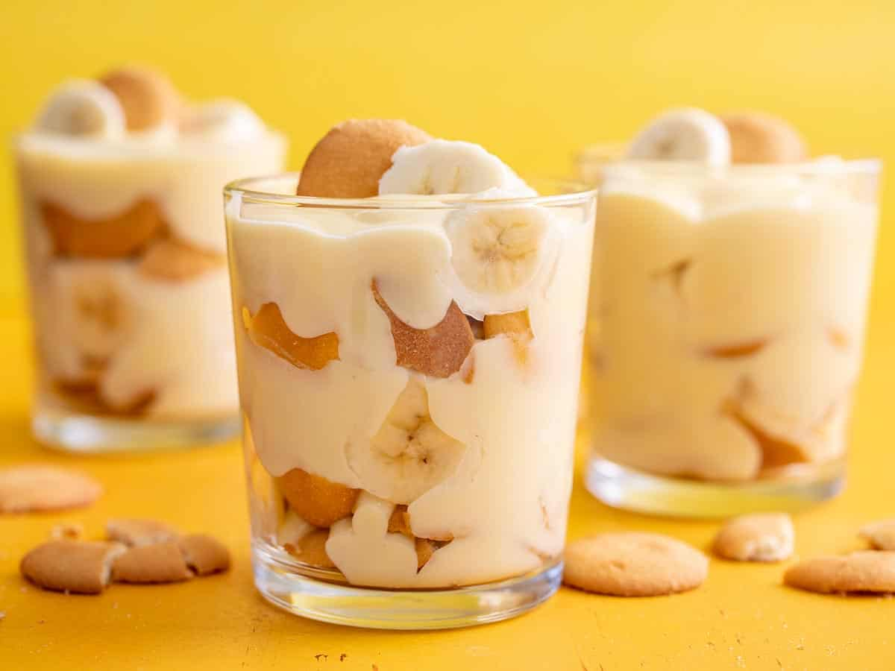

Banana Pudding

Description
Banana pudding is a Southern dessert staple with that creamy vanilla pudding, deliciously sweet slices of bananas and, of course, those buttery vanilla wafers. This super easy no-bake dessert travels well and is easy to make in individual portions or a large casserole to feed a crowd, so it’s perfect for holidays and family gatherings. But why wait for a special occasion? This banana pudding recipe is the perfect meal prep dessert so you can enjoy a little grab-and-go treat every day!
Ingredients
- 6 ounces vanilla wafers
- 3 bananas
- 3 cups vanilla pudding (homemade or store bought)
Steps
- Slice bananas in about 1/3 inch thick rounds. Place four glasses that hold about 2 cups each on your work surface.*
- Add about four vanilla wafers to each glass. If necessary, snap them in half to create an even layer. Top with 4 or 5 slices of banana.
- Spoon about 1/4 cup of pudding over the bananas. Repeat the layering process a second and a third time. Serve!